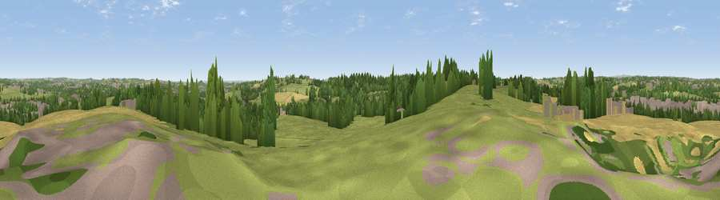

Viewpoint near Dale Abbey
#31827 in England · top 49% of its area beats it · near Dale AbbeyWhere it is
The exact computed spot (SK 43775 39775). Click the marker for map links.
The view, rendered

A 360° render of this exact spot computed from the terrain model, tree cover and land cover — summer colours, afternoon light, calibrated against photographs of famous viewpoints. Real trees, hedges and buildings will differ in detail.
The panorama
Grey silhouette: terrain skyline in each direction (720 bearings, Earth curvature and refraction included). Dashed green: skyline with trees (+15 m) and buildings (+8 m) as obstacles. Blue strip: how far the ground is visible on each bearing.
Where the view opens
Wedge length = distance to the farthest visible ground on that bearing (vegetation-aware). Rings at 10, 25 and 50 km.
What fills the view
48% grassland · 24% woodland · 18% cropland · 10% built-up
Angular shares of the visible panorama (visual magnitude), not map area. Landscape diversity 0.54 (0–1 Shannon).
Key numbers
More beautiful places nearby
The staircase of upgrades: each row has a higher view potential than everything closer. Driving times are estimates from straight-line distance, calibrated against real road routing — check an actual route before setting out.
| Place | Direction | Drive | Score |
|---|---|---|---|
| Viewpoint near Dale Abbey | S · 1 km | ~4 min | 43.0 |
| No Man's Lane | SE · 3 km | ~8 min | 65.8 |
| The Tors | NNW · 16 km | ~29 min | 68.9 |
| Alport Height | NW · 18 km | ~31 min | 73.9 |
| Viewpoint near Woodhouse Eaves | SSE · 26 km | ~42 min | 77.7 |
| Viewpoint near Mow Cop | WNW · 60 km | ~83 min | 78.9 |
| Viewpoint near Mow Cop | WNW · 60 km | ~83 min | 80.2 |
| Viewpoint near Little Wenlock | WSW · 86 km | ~110 min | 84.2 |
52.95357, -1.34988 · source: screening · position refined by local search. Computed location — check access rights before visiting.